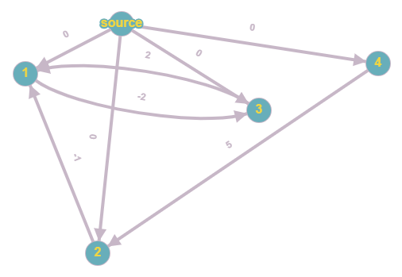

Giải bài toán ràng buộc
-
Bài toán ràng buộc điều kiện là gì?
Bài toán ràng buộc cho chúng ta một số điều kiện (đẳng thức và bất đẳng thức) để giải, yêu cầu chúng ta tìm đáp án thoả mãn hoặc khẳng định rằng không có đáp án thoả mãn.
Ví dụ bài toán yêu cầu tìm mảng x có 4 phần tử sao cho:
- \(x_1 \le x_2 - 1\)
- \(x_1 = x_3 + 2\)
- \(x_2 \ge x_4 + 5\)
\(\to [-1,\, 0,\, -3,\, 0]\) or \([1,\,2,\,-1,\,-3]\) -
Giải bài toán ràng buộc như nào?
Trước hết, ta xét đồ thị có hướng có trọng số trong đó mỗi điều kiện được chuyển thành các cạnh như sau:
Điều kiện Biến đổi Đồ thị \(x_i - x_j \le c\) \(x_i \le x_j + c\) add_edge\((j, i, c)\) \(x_i - x_j \ge c\) \(x_j \le x_i - c\) add_edge\((i, j, -c)\) \(x_i = x_j + c\) \(x_i \le x_j + c\) và \(x_j \le x_i - c\) add_edge\((j, i, c)\) và add_edge\((i, j, -c)\)
Tạo một đỉnh ảo \(Source\) và add_edge\((Source, i, 0)\) với mỗi \(i\).

Ta chạy thuật toán đường đi ngắn nhất từ đỉnh \(Source\) khi đó \(x_i = dist_i\) là một đáp án thoả mãn.
Điều này đúng vì \((u,\,v,\,c)\) thì \(dist_u + c \ge dist_v\) (không thì thuật toán đường đi ngắn nhất phải có thêm pha gán \(dist_v = dist_u + c\)) \(\,\, \to \) thoả mãn đề bài.
Nhưng có lưu ý rằng: cạnh có trọng số âm, hoàn toàn có thể tồn tại chu trình âm, đây cũng là trường hợp mà không tồn tại đáp án thoả mãn. Để kiểm tra xem có chu trình âm không ta sẽ sử dụng bellman-ford(spfa) để giải bài toán trong \(O(E * V)\).//đỉnh 0 là đỉnh ảo(Source). dist[0] = false; vis[0] = true; q.push(0); while (q is not empty) { int cur = q.front();q.pop(); vis[cur] = 0; for (e = adjacent edges) if (dist[cur] + e.weight > dist[e.v]) { dist[e.v] = dist[cur] + e.weight; if (vis[e.v] is false) { vis[e.v] = true; q.push(e.v); cnt[e.v]++; //nếu cnt(v) >= n có nghĩa là v được relax đến n lần //đây là điều kiện cần và đủ để nói đồ thị có chu trình âm if (cnt[e.v] >= n) { puts("No"); return 0; } } } } puts("Yes");// Tồn tại đáp án và 1 trong số đó là dist[]. -
Link tham khảo:
pdf
CF gym problem